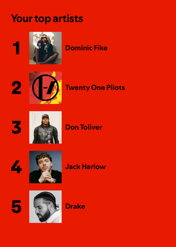

Spotify Wrapped
Full Text Analysis of My Personal Spotify Data
After viewing my 2024 Spotify Wrapped (pictured above), I questioned the validity of the results that were displayed. Was Drake really one of my top artists? Did I really listen to Dominic Fike more than Twenty One Pilots? Using Spotify’s “Data Request” feature, I was able to receive copies of my streaming history from November 4th, 2023 to November 4th, 2024.
First, I merged the set of three JSON files I received, and converted them into a single csv file to make it easier to work with, reading the csv into a data table:
Show the code
df1 <- fromJSON("StreamingHistory_music_0.json") #Importing the .JSON files
df2 <- fromJSON("StreamingHistory_music_1.json")
df3 <- fromJSON("StreamingHistory_music_2.json")
merged_df <- bind_rows(df1, df2, df3)
write.csv(merged_df, "spotify_data.csv", row.names = FALSE) #Writing as a single .csv file
spotify_csv <- read_csv("spotify_data.csv")
spotify_data <- spotify_csv |> mutate(endTime = as.Date(endTime))
head(spotify_data, 5)# A tibble: 5 × 4
endTime artistName trackName msPlayed
<date> <chr> <chr> <dbl>
1 2023-10-17 Bad Bunny MONACO 69369
2 2023-11-04 Twenty One Pilots Heavydirtysoul 2944
3 2023-11-04 Twenty One Pilots Hometown 874
4 2023-11-04 Twenty One Pilots Levitate 768
5 2023-11-04 Twenty One Pilots Ride 917It can be seen that the “artistsName” and “trackName” variables both contain character strings, which is what we’ll be working with. Just to simplify things, I converted the “endTime” variable from <S3: POSIXct> to <date>. The variable “msPlayed” contains <dbl> values which measure the time listened to a song measured in milliseconds.
Now we can being working with the strings!
One observation I made in the dataset was that many songs have a feature artist, and therefore have “(feat. ‘artist name’)” in the title. We can clean the dataset by removing the features from the track names!
First, let’s look at some examples of what this looks like, using str_detect:
Show the code
feature_example <- spotify_data |>
filter(str_detect(trackName,"\\(feat.*\\)")) |> #Filters to show strings including "feat."
select(artistName, trackName)
head(feature_example, 5)# A tibble: 5 × 2
artistName trackName
<chr> <chr>
1 Lil Uzi Vert Neon Guts (feat. Pharrell Williams)
2 Metro Boomin Space Cadet (feat. Gunna)
3 Metro Boomin Too Many Nights (feat. Don Toliver & with Future)
4 Gunna P power (feat. Drake)
5 A Boogie Wit da Hoodie Drowning (feat. Kodak Black) Now, using str_relpace_all to remove all features, and str_trim to remove all spaces after the string:
spotify_data_nofeat <- spotify_data |>
mutate(trackName = str_replace_all(trackName,"\\(feat.*\\)", "")) |>
mutate(trackName = str_trim(trackName))Using the same five songs as before, we can now show how the features have been removed:
Show the code
feature_example1 <- spotify_data_nofeat |>
filter(str_detect(trackName, "Neon Guts|Space Cadet|Too Many Nights|P power|Drowning")) |>
select(artistName, trackName) #Selecting the same example used before
head(feature_example1,5)# A tibble: 5 × 2
artistName trackName
<chr> <chr>
1 Lil Uzi Vert Neon Guts
2 Metro Boomin Space Cadet
3 Metro Boomin Too Many Nights
4 Gunna P power
5 A Boogie Wit da Hoodie Drowning Boom! No features! Let’s look at some rows in the data and see if it looks better:
Show the code
feature_example2 <- spotify_data_nofeat |>
select(artistName, trackName)
feature_example2[41:47,] #A random selection of data# A tibble: 7 × 2
artistName trackName
<chr> <chr>
1 A Boogie Wit da Hoodie Drowning
2 Metro Boomin Superhero (Heroes & Villains) [with Future & Chris Bro…
3 Chief Keef Love Sosa
4 Drake Rich Flex
5 Future Solo
6 Metro Boomin Trance (with Travis Scott & Young Thug)
7 Mac Miller Ayye Uh oh! We didn’t account for features that use “with” instead of “feat.” Also, we can see that some songs use brackets while others use parenthesis. We can use lookarounds and some more regular expressions to account for the variations of “with” that song titles use:
spotify_data_nofeat <- spotify_data_nofeat |>
mutate(trackName = str_replace_all(trackName,"(?<=\\s)(\\(.*?\\)|\\[.*?\\]|\\swith\\s)(.*)", "")) |>
mutate(trackName = str_trim(trackName))The escapes make it look a little messy, but this uses a positive lookbehind to check for a space before matching any text in parenthesis, brackets, or simply “with” with any spaces around it. We replace all of the matches to this pattern with an empty space. Here’s our example again, displaying the updated results:
Show the code
feature_example2 <- spotify_data_nofeat |>
select(artistName, trackName)
feature_example2[41:47,] #Same example as before# A tibble: 7 × 2
artistName trackName
<chr> <chr>
1 A Boogie Wit da Hoodie Drowning
2 Metro Boomin Superhero
3 Chief Keef Love Sosa
4 Drake Rich Flex
5 Future Solo
6 Metro Boomin Trance
7 Mac Miller Ayye This looks much cleaner now.
Now that we have a clean data frame containing the artist name, song name, date, and amount of time listened too, we can make some graphs!
First, I want to look at my top five artists by listening time. To do this, we need to add up the total play time each artist received:
msPlayed_artist <- spotify_data_nofeat |>
group_by(artistName) |>
summarise(total_msPlayed = sum(msPlayed)) |>
arrange(desc(total_msPlayed)) |>
head(5)Time to graph:
Show the code
ggplot(msPlayed_artist, aes(x = fct_reorder(artistName, total_msPlayed), y = total_msPlayed, fill = artistName)) +
geom_bar(stat = "identity") +
labs(
x = "Artist",
y = "Total Listening Time (ms)",
title = "My Top Five Spotify Artists by Listening Time",
fill = "Artist"
) +
coord_flip() +
theme_minimal(base_family = "Palatino")Well that’s odd, it looks like my order doesn’t match with what Spotify told me. Twenty One Pilots has significantly more total listening time than Dominic Fike, yet Dominic Fike appears first on the official list.
What if we look at total songs played instead of listening time:
total_songs_artist <- spotify_data_nofeat |>
group_by(artistName) |>
summarise(total_songs = n()) |>
arrange(desc(total_songs)) |>
head(5)Once again graphing:
Show the code
ggplot(total_songs_artist, aes(x = fct_reorder(artistName, total_songs), y = total_songs, fill = artistName)) +
geom_bar(stat = "identity") +
labs(
x = "Artist",
y = "Total Songs Played",
title = "My Top Five Spotify Artists by Total Songs Played",
fill = "Artist"
) +
coord_flip() +
theme_minimal(base_family = "Palatino")Well, at least this tells us that something isn’t quite right with how Spotify determines a user’s top artists. Our top 5 artists measured by total songs played is in the same order as when we measure by total listening time, however this time Twenty One Pilots and Dominic Fike are much closer. This tells me that Drake for sure belonged on my Spotify Wrapped, as he ranked 3rd in total songs played and total listening time. I also confirmed my suspicion that I listened to more Twenty One Pilots than any other artist, especially when looking at listening time. One reason for the discrepancy could be the time frame that Spotify uses. My data begins in November of 2023 and ends in November of 2024. It could be possible that Spotify uses data beginning on January 1st of each year. We can use only the songs from January 1st and onwards to see if it significantly changes our results.
Repeating the process for listening time:
Show the code
spotify_2024_only1 <- spotify_data_nofeat |>
filter(endTime >= "2024-01-01") |>
group_by(artistName) |>
summarise(total_msPlayed = sum(msPlayed)) |>
arrange(desc(total_msPlayed)) |>
head(5)
ggplot(spotify_2024_only1, aes(x = fct_reorder(artistName, total_msPlayed), y = total_msPlayed, fill = artistName)) +
geom_bar(stat = "identity") +
labs(
x = "Artist",
y = "Total Listening Time (ms)",
title = "My Top Five Spotify Artists by Listening Time for 2024",
fill = "Artist"
) +
coord_flip() +
theme_minimal(base_family = "Palatino")Repeating the process for total songs played:
Show the code
spotify_2024_only2 <- spotify_data_nofeat |>
filter(endTime >= "2024-01-01") |>
group_by(artistName) |>
summarise(total_songs = n()) |>
arrange(desc(total_songs)) |>
head(5)
ggplot(spotify_2024_only2, aes(x = fct_reorder(artistName, total_songs), y = total_songs, fill = artistName)) +
geom_bar(stat = "identity") +
labs(
x = "Artist",
y = "Total Songs Played",
title = "My Top Five Spotify Artists by Total Songs Played for 2024",
fill = "Artist"
) +
coord_flip() +
theme_minimal(base_family = "Palatino")This data is closer to the official Spotify Wrapped, though still not quite right. When looking at total listening time for 2024, Don Toliver pushes his way up to third on the list, which is where he was officialy ranked. However, when looking at total songs played for 2024, the only time Dominic Fike has outranked Twenty One Pilots, Don Toliver falls places fifth by almost 500 songs.
Overall, Spotify Wrapped does a good-enough job in the sense that it correctly identified my top artists artists for both total listening time and total songs played. However, the order that it ranked my top five artsits in doesn’t seem to quite line up with my streaming history data. However, as we found above, the time frame of the data can make a big difference in the rankings. My data contained history up until November 4th, and it is likely that Spotify Wrapped, which released on December 4th, utilized that extra month of streaming history that was not included in the files I received. This extra month of missing data could explain some of the differences in rankings I found.
To view the data:
The three individual .JSON files of my Spotify streaming history and the merged .csv file can be accessed on the public repository for this website!
https://github.com/thomasmatheis2028/thomasmatheis2028.github.io